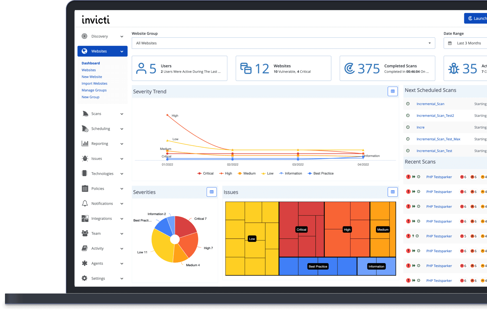
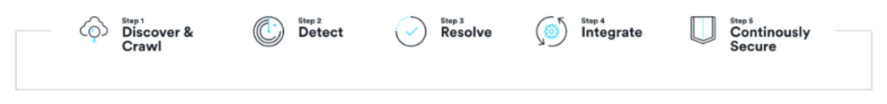

请访问原文链接：Invicti v24.12.0 for Windows - Web 应用程序安全测试 查看最新版。原创作品，转载请保留出处。
作者主页：sysin.org
Invicti 是一种自动化但完全可配置的 Web 应用程序安全扫描程序，使您能够扫描网站、Web 应用程序和 Web 服务，并识别安全漏洞。Invicti 可以扫描所有类型的 Web 应用程序，无论其构建平台或语言。
- Invicti 是唯一一款能够以只读且安全的方式自动利用已识别漏洞以确认已识别问题的在线 Web 应用程序安全扫描程序。
- 它还提供了漏洞证明，因此您无需浪费时间手动验证它。例如，在检测到 SQL 注入漏洞的情况下，它将显示数据库名称作为利用证明。
Invicti 的扫描技术旨在帮助您轻松保护 Web 应用程序而无需忧虑枝节小事，因此您可以专注于修复报告的漏洞。如果 Invicti 无法自动确认漏洞，它会通过在它前面加上 ‘[Possible]’ 并分配一个确定性值来通知您该漏洞，因此您知道应该立即修复什么。
Invicti (formerly Netsparker) 应用安全测试

Invicti - The Largest Dynamic Application Security Solutions Provider In The World
零噪音的应用安全
Application security with zero noise
在您的 SDLC 的每个步骤中构建安全自动化 - 这样您的团队就可以消除每月数百小时的手动任务。

- 第 1 步 > 发现和抓取
- 第 2 步 > 探测
- 第 3 步 > 解决
- 第 4 步 > 整合
- 第 5 步 > 持续安全
使用 DAST 及更多覆盖应用程序安全测试
发现 + 抓取
扫描每个应用程序的每个角落
如果您不知道 Web 资产的存在，就无法保护它。当您拥有数以千计的网络资产时，您的组织必然会丢失其中一些资产 (sysin)。这使他们容易受到攻击。
- 全面了解您的所有应用程序——即使是那些丢失、遗忘或隐藏的应用程序。
- 扫描任何类型的 Web 应用程序、Web 服务和 Web API——包括第一方和第三方（开源）代码——无论它们使用何种技术、框架或语言构建。
- 其他工具遗漏的网络资产角落 (sysin)。使用高级抓取和我们的交互式 + 动态 (IAST + DAST) 组合扫描方法扫描。
探测
更多的覆盖意味着更少的风险
其他应用程序安全测试解决方案依赖于单一类型的扫描，例如动态 (DAST) 或交互式 (IAST)。就其本身而言，每种类型都可能错过高风险漏洞。Invicti 独特的 DAST + IAST 扫描方法可帮助您找到其他工具无法找到的漏洞。
- 结合 DAST + IAST 扫描检测更多漏洞 — 由开创世界上第一个 IAST 的团队开发。
- 将真正使您面临风险的漏洞与没有风险的漏洞区分开来 (sysin)。
- 结合基于签名和基于行为的扫描，获得快速、准确的结果。
解决
以更少的手动工作修复漏洞
使用自动化和工作流功能减少您的安全积压，从而更轻松地管理和分配安全任务。每周为您的安全团队节省数小时的手动工作。
- 使用 Proof-Based Scanning™ 减少浪费时间的误报，无需手动验证。
- 自动创建并分配已确认的漏洞给开发人员 (sysin)。
- 通过精确定位漏洞确切位置的详细文档帮助开发人员快速修复问题。
整合
将安全无缝融入开发
当您在代码发布后发现漏洞时，问题就会蔓延：延迟发布，乱码故障排除，安全和开发人员之间的紧张关系。Invicti 通过将安全性集成到开发人员日常使用的工具和工作流程中 (sysin)，帮助您在萌芽的安全问题发展为重大破坏之前将其消除。
- 自动为开发人员提供快速反馈，训练他们编写更安全的代码，从而随着时间的推移减少漏洞。
- 在 SDLC 中及早发现漏洞，这样您就可以节省时间、金钱和解决发布后安全问题的麻烦。
- 消除瓶颈并减少开发和安全团队之间的紧张关系。通过帮助开发人员自行处理安全任务，
持续安全
保持安全，一天 24 小时，一年 365 天
在快速部署环境中，风险存在一段时间后才会被定期扫描、漏洞奖励计划或手动渗透测试发现 (sysin)。现在，您可以通过永不休眠的安全功能随时保持安全。
- 通过整个 SDLC 的持续扫描和安全检查，防止延误并确保减少风险。
- 当部署的技术过时获得自动通知 - 无需运行新的扫描 - 让您的应用程序保持安全。
- 将风险降至最低——即使在敏捷或快速部署环境中也是如此。
Invicti 版本
Invicti Web 应用程序安全扫描程序有两个版本：
- Invicti Enterprise 是一种多用户企业和可扩展解决方案，可按需提供或作为本地解决方案提供（Invicti Enterprise On-Premises、Invicti Enterprise On-Demand）。
- Invicti Standard 是一个单用户 Windows 应用程序。
Invicti 的两个版本都使用相同的 Proof-Based Scanning 技术来提供高度准确的扫描结果。此外，两者都易于使用，并且彼此完全集成，并支持与许多其他工具的集成。
Invicti Enterprise 是一个多用户在线 Web 应用程序安全扫描解决方案，具有内置的工作流工具。它专为帮助企业在几个小时内扫描和管理数百甚至数千个网站的安全性而设计，无需安装任何新的硬件或软件。
Invicti Enterprise 用于集成到软件开发生命周期、DevOps 和实时环境中，以在实时环境中开发或运行数千个 Web 应用程序和 Web 服务时对其进行扫描。它也可作为本地版本提供。
Invicti Standard 可作为带有内置渗透测试和报告工具的 Windows 应用程序提供，其中许多工具允许完全自动化的安全测试。Invicti Standard 用于进行手动分析和利用，非常适合需要进行更高级测试的情况，例如需要用户输入的单个组件。
系统要求
Before installing Invicti Standard, always ensure that you have the latest service pack and Windows updates on your computer.
- Microsoft Windows 8.1, Windows 10, or Windows 11; for server versions: Windows Server 2016 or above (Windows Server 2019 or later recommended)
- Microsoft Internet Explorer 11
- Microsoft .NET Framework 4.8
- 1.8 GHz or faster processor. Dual-core or better recommended
- 4GB of available RAM (8 GB or higher recommended)
- 1 GB of HDD space for installation. Typical disk usage per scan should be less than 100 MB, depending on the target site complexity and attacking options, this value may increase to a few GBs
新增功能
2024 年 12 月 3 日
Invicti Standard 03 Dec 2024 v24.12.0
新的安全检查
- 添加了对 Google 跟踪代码管理器的检测作为漏洞数据库 (VDB) 中的一项技术
改进
- Invicti Standard Agent 升级到 .NET 8 以提高性能和兼容性
- 改进了对[可能的]服务器端模板注入漏洞的分析和修复能力
修复
- 修复了 ICBD 和 Puppeteer 缺失的代理实现
- 修复了重新测试类型扫描无法识别完整扫描期间检测到的相同漏洞的问题
- 修复了由 Chromium 导致的某些代理的高 CPU 使用率
- 修复了未检测到配置错误的 Access-Control-Allow-Origin 标头漏洞的问题
- 删除了[可能的]通过查询字符串传输密码的漏洞
下载地址
Invicti Standard 17 Jan 2023 v23-1-0 [EoD]
Invicti Standard 22 Feb 2023 v23.2.0 [EoD]
Invicti Standard 16 Mar 2023 v23.3.0 [EoD]
Invicti Standard 24 Apr 2023 v23.4.0 [EoD]
Invicti Standard 11 May 2023 v23.5.0 [EoD]
Invicti Standard 07 Jun 2023 v23.6.0 [EoD]
Invicti Standard 19 Jul 2023 v23.7.0 [EoD]
Invicti Standard 17 Aug 2023 v23.8.0 [EoD]
Invicti Standard 06 Sep 2023 v23.9.0 [EoD]
Invicti Standard 18 Oct 2023 v23.10.0 [EoD]
Invicti Standard 16 Nov 2023 v23.11.0 [EoD]
Invicti Standard 13 Dec 2023 v23.12.0 [EoD]
Invicti Standard v24.1.0.43324 - 09 Jan 2024 [EoD]
Invicti Standard 30 Jan 2024 v24.1.0.43434 [EoD]
Invicti Standard 20 Feb 2024 v24.2.0.43677 [EoD]
Invicti Standard 12 Mar 2024 v24.3.0 [EoD]
Invicti Standard 28 Mar 2024 v24.3.1 [EoD]
Invicti Standard 17 Apr 2024 v24.4.0 [EoD]
Invicti Standard v24.5.0 - 7 May 2024 [EoD]
Invicti Standard v24.6.0 - 13 June 2024 [EoD]
Invicti Standard v24.7.0 - 9 July 2024 [EoD]
Invicti Standard v24.8.0 - 13 August 2024 [EoD]
Invicti Standard v24.8.1 - 27 August 2024 [EoD]
Invicti Standard v24.9.1 - 24 September 2024 [EoD]
Invicti Standard v24.10.0 - 08 Oct 2024 [EoD]
Invicti Standard v24.11.0 - 12 Nov 2024
Invicti Standard v24.12.0 - 03 Dec 2024 [N/A]
相关产品：
更多相关产品：
- Magic Quadrant for Application Security Testing 2022
- Magic Quadrant for Application Security Testing 2023
更多：HTTP 协议与安全

文章用于推荐和分享优秀的软件产品及其相关技术，所有软件默认提供官方原版（免费版或试用版），免费分享。对于部分产品笔者加入了自己的理解和分析，方便学习和研究使用。任何内容若侵犯了您的版权，请联系作者删除。如果您喜欢这篇文章或者觉得它对您有所帮助，或者发现有不当之处，欢迎您发表评论，也欢迎您分享这个网站，或者赞赏一下作者，谢谢！
 支付宝赞赏
支付宝赞赏
 微信赞赏
微信赞赏
赞赏一下